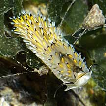

|
|
|
Nudibranchs
Order Nudibranchia
updated
May 2020
if you
learn only 3 things about them ...
 Pronounced 'noo-dee-brank', which means 'naked gills'. Pronounced 'noo-dee-brank', which means 'naked gills'.
In some, the gaudy colours warn of their toxic nature
or unpleasant taste.
These
slugs eat other animals. Not all slugs are nudibranchs. |
|
Where
seen? Nudibranchs may be encountered on many of our shores.
They are especially more likely to be seen near reefs. Also on coral
rubble and rocky shores with sponges and other encrusting animals.
Some are well camouflaged. The colourful ones may also be hard to
spot as they blend in with their equally colourful prey. Many are
quite small.
What are nudibranchs? Nudibranchs
belong to Phylum Mollusca.They are snails
of the Class Gastropoda that lack shells
as adults.
Features: Nudibranchs have lost
their shells as adults; 'Nudibranch' (pronounced 'noo-dee-brank' to
rhyme with 'bank') means 'naked gills'. To protect themselves, some
produce distasteful substances, toxins and even acids. They advertise
this with bright warning colours. Others are camouflaged to match
their surroundings. Those that eat colourful creatures such as sponges
or corals, may themselves be colourful to match their prey. Being small and flat, they can easily hide in narrow places.
Some nudibranchs breathe with a flower-like feathery external gill
on their backs. Others lack this feathery gill and their gills are
hidden between the body mantle and the foot. Many nudibranchs have
two pairs of tentacles. One pair is near the mouth called oral tentacles,
usually used to sense things by touch. The second pair is on top of
the head and called rhinophores. Rhinophores are believed to 'smell'
or detect chemicals in the hunt for prey and mates.
Sometimes confused with flatworms,
as well as other sea slugs that appear similar but belong to different
orders. Here's more on how to tell nudibranchs
from flatworms, and nudibranchs from
other sea slugs. |
| Stored stolen stingers: Aeolid
nudibranchs have long, slender bodies with clusters or rows of elongated
portions called cerata. These contain extensions of the digestive
system and may also help the nudibranch breathe. Some nudibranchs,
like Cerberilla nudibranch (Cerberilla sp.) protect themselves with the stingers of the
sea anemones or corals that they eat. These stingers are passed, undischarged,
to the cerata. The cerata of these nudibranchs have special sacs at
their tips that contain the stinging cells of their prey. These stingers
are undischarged and now protect the nudibranch.Here, the stingers
remain 'live', ready to fire off and protect the nudibranch. |

Pasir Ris,
Dec 08 |

The Blue
dragon nudibranch
can be numerous at times.
Beting Bronok , Jul 03 |

The Melibe nudibranch eats tiny crustaceans, capturing these with an expandable hood.
Tuas, Mar 09 |
What do they eat? Most nudibranchs
are carnivores, each species usually specialises in a particular victim.
Being small and slow, they feed on immobile creatures like barnacles,
sponges, ascidians, hard corals, soft corals, sea anemones, zoanthids,
peacock anemones, sea pens and eggs of other creatures including other
nudibranch eggs.
Slugs with teeth: Like other molluscs, many nudibranch have a rough
tongue (called a radula). Each
species has specially adapted 'teeth' on the radula to deal with its
prey. Those that eat sponges have many scythe-like teeth to scrape
at the sponges. Some
nudibranchs lack a radula and simply secrete digestive juices on their
prey and suck up the soften soupy result.
Others that feed on corals have well-developed jaws to hold onto the
coral polyp while they gouge out the flesh with hooked teeth. Those
that feed on bryozoans or ascidians have a pair of large teeth to
cut open their prey.
Fierce
slugs: Some nudibranchs, like the Orange-spotted gymnodoris, eat other slugs and nudibranchs! The Melibe nudibranch eats tiny crustacean, capturing these with an expandable hood. |
Nudibranch babies: Nudibranchs
are simultaneous hermaphrodites, that is, each animal has both male
and female reproductive organs at the same time. They practice internal
fertilisation. So each nudibranch has a complex system of tubes to
avoid self fertilisation, to introduce sperm while at the same time
receiving sperm from a partner, and for laying eggs.
They mate in pairs, lining up side-by-side, facing opposite directions
in order to exchange sperm. Then they go their separate ways and each
lays its egg mass, usually on the prey that they eat or on a hard
surface nearby. Eggs are often ribbon-like, laid in a rosette. Here's
some photos of nudibranch egg
ribbons. In most, the eggs hatch into free-swimming larvae which
have shells. Often, the larvae only undergoes metamorphosis and settles
down when it is near its particular prey! The juveniles lose their
shells and eventually turn into adult nudibranchs. |
Human uses: Nudibranchs don't
do well in captivity and are thus not extensively collected for the
aquarium trade. Moreover, some nudibranchs such as the phyllids produce toxins that may kill its tank mates. However, they are part
of the attraction for divers and other visitors to natural habitats.
Status and threats: None of our
nudibranchs are listed among the endangered animals of Singapore.
However, like other creatures of the intertidal zone, they are affected
by human activities such as reclamation and pollution. Trampling by
careless visitors and over-collection can also have an impact on local
populations. |
Order
Nudibranchia recorded for Singapore
from Tan
Siong Kiat and Henrietta P. M. Woo, 2010 Preliminary Checklist
of The Molluscs of Singapore.
^from WORMS
+Other additions (Singapore Biodiversity Record, etc)
| |
+Aegires sp.
+Aegires villosus |
| |
Actinocyclus
sp. (Fugly nudibranch)
Actinocyclus japonica
Actinocyclus cf. papillatus
Actinocyclus verrucosus |
| |
Cadlinella
ornatissima
Ceratosoma gracillimum
(Slender ceratosoma nudibranch)
Ceratosoma trilobatum
Chromodoris elisabethina
Chromodoris lineolata
(Lined chromodoris nudibranch)
+Chromodoris mandapamensis
Chromodoris orientalis
Chromodoris quadricolor
Chromodoris striatella
^Doriprismatica
atromarginata=Glossodoris atromarginata (Black-margined
glossodoris nudibranch)
Glossodoris cincta
Glossodoris misakinosibogae
Glossodoris pallida
Glossodoris rufomarginata
^Goniobranchus coi=Chromodoris coi
+Goniobranchus collingwoodi
^Goniobranchus fidelis=Chromodoris
fidelis (Reliable chromodoris nudibranch)
^Goniobranchus sinensis=Chromodoris sinensis
^Goniobranchus tumuliferus=Chromodoris
tumulifera (Cow chromodoris nudibranch)
Hypselodoris sp.
(Pink-gilled hypselodoris nudibranch)
Hypselodoris bullockii
Hypselodoris emma
Hypselodoris infucata
Hypselodoris kanga
(Kanga hypselodoris nudibranch)
+Hypselodoris maritima
(Maritima hypselodoris nudibranch)
Hypselodoris placida
+Hypselodoris tryoni
Mexichromis multituberculata
^Mexichromis trilineata=Pectenodoris trilineata
^Miamira sinuata=Ceratosoma
sinuatum ('Jolly Green Giant' nudibranch) |
| |
Doriopsis granulosa=^Doris granulosa |
| |
Doto
sp. 1
Doto sp. 2
+Doto greenamyeri
+Doto ussi
|
| |
+Eubranchus ocellatus
+Eubranchus rubropunctatus |
| |
Goniodoridella
savignyi
Murphydoris singaporensis
Okenia purpurata
+Trapania caerulea
+Trapania euryeia
+Trapania gibbera
+Trapania vitta |
| |
Family Gymnodorididae (previously in Polyceridae) |
| |
Kalinga
ornata
+Nembrotha lineolata
+Nembrotha livingstonei
+Nembrotha sp.
Plocamopherus ceylonicus
Tambja sp.
+Tambja sagamiana
Thecacera sp. |
| |
Cuthona
sibogae (Cuthona nudibranch)
Phestilla melanobranchia
Subcuthona sp. |
| |
Melibe pilosa=Melibe vexillifera=^Melibe viridis
Melibe viridis (Melibe
nudibranch) |
| |
Tritonia bollandi
Tritonia sp. |
|
Links
- The
Sea Slug Forum by Dr Bill Rudman: everything you could possibly
want to know about nudibranchs with fabulous photos and close-ups of
nudibranch body parts, larvae and more. And lots of links. Go to the
General Topics section and browse the many interesting articles. Dr
Rudman helped identify our Chek Jawa nudibranchs and they are featured
on his site.
- The
Slug Site has fact sheets with gorgeous photos of various slugs
in the Branch of the Week
collection.
- A
Guide to Singapore Nudibranchs by Uma Sachidhanandam: though without
any description of the nudibranchs, there are lots of photos and locations
where the species are found and a list of Singapore nudibranchs.
- What
can nudibranchs tell us about climate change? on the wild shores
of singapore blog.
References
- Toh Chay Hoon. 30 Jun 2017. New Singapore record of the nudibranch, Bulbaeolidia alba. Singapore Biodiversity Records 2017: 78.
- Toh Chay Hoon. 31 May 2017. A nudibranch, Doto greenamyeri, at Pulau Hantu. Singapore Biodiversity Records 2017: 68.
- Toh Chay Hoon. 31 May 2017. New Singapore record of nudibranch, Eubranchus ocellatus. Singapore Biodiversity Records 2017: 65.
- Toh Chay Hoon. 28 Apr 2017. New Singapore record of the nudibranch, Trapania gibbera. Singapore Biodiversity Records 2017: 52
- Toh Chay Hoon. 28 Apr 2017. New Singapore record of the nudibranch, Doto ussi. Singapore Biodiversity Records 2017: 47
- Toh Chay Hoon. 27 May 2016. New Singapore record of nudibranch Aegires villosus. Singapore Biodiversity Records 2016: 65
- Toh Chay Hoon. 29 April 2016. New Singapore record of nudibranch Hypselodoris tryoni. Singapore Biodiversity Records 2016: 61
- Toh Chay Hoon. 29 April 2016. New Singapore record of nudibranch Trapania caerulea. Singapore Biodiversity Records 2016: 57
- Ng Boon Leong & Toh Chay Hoon. 31 March 2016. New Singapore record of nudibranch genus Godiva. Singapore Biodiversity Records 2016: 39
- Toh Chay Hoon. 31 March 2016. New Singapore record of nudibranch Sakuraeolis kirembosa. Singapore Biodiversity Records 2016: 38
- Toh Chay Hoon & Hsini Lin. 26 Februrary 2016. New Singapore record of nudibranch genus Aegires. Singapore Biodiversity Records 2016: 32
- Toh Chay Hoon & Rene Ong. 9 October 2015. New record of the nudibranch Doridomorpha gardineri in Singapore. Singapore Biodiversity Records 2015: 151-153
- Tan Yee Keat. 26 June 2015. Apparent mimicry of marine flatworm and nudibranch: Marine flatworm, Pseudoceros sp.; Nudibranch, Gymnodoris impudica. Singapore Biodiversity Records 2015: 85-86.
- Toh Chay Hoon. 14 August 2015. New record of nudibranch Dermatobranchus fortunatus in Singapore. Singapore Biodiversity Records 2015: 101-112
- Toh Chay Hoon. 12 December 2014. New record of nudibranch Nembrotha lineolata in Singapore. Singapore Biodiversity Records 2014: 326.
- Toh Chay Hoon. 30 May 2014. New record of nudibranch Goniobranchus collingwoodi in Singapore. Singapore Biodiversity Records 2014: 147
- Toh Chay Hoon. 9 May 2014. New record of the nudibranch Tambja sagamiana in Singapore. Singapore Biodiversity Records 2014: 126
- Toh Chay Hoon. 4 April 2014. New record of nudibranch Trapania euryeia in Singapore. Singapore Biodiversity Records 2014: 90
- oh Chay Hoon. 28 March 2014. New record of the nudibranch Trapania vitta in Singapore. Singapore Biodiversity Records 2014: 80
- Toh Chay Hoon. 21 March 2014. New record of the nudibranch Nembrotha livingstonei in Singapore. Singapore Biodiversity Records 2014: 78-79
- Toh Chay Hoon. 29 November 2013. New Singapore record of nudibranch genus Nembrotha. Singapore Biodiversity Records 2013: 80.
- Toh Chay Hoon. 22 November 2013. New Singapore records of two nudibranch species from Pulau Tekukor: Eubranchus rubropunctatus, Chromodoris mandapamensis. Singapore Biodiversity Records 2013: 76.
- Tan Siong Kiat
and Henrietta P. M. Woo, 2010 Preliminary
Checklist of The Molluscs of Singapore (pdf), Raffles Museum
of Biodiversity Research, National University of Singapore.
- Chou, L. M., 1998.
A
Guide to the Coral Reef Life of Singapore. Singapore Science
Centre. 128 pages.
- Wee Y.C. and Peter
K. L. Ng. 1994. A First Look at Biodiversity in Singapore. National
Council on the Environment. 163pp.
- Debelius, Helmut,
2001. Nudibranchs
and Sea Snails: Indo-Pacific Field Guide
IKAN-Unterwasserachiv, Frankfurt. 321 pp.
- Wells, Fred E.
and Clayton W. Bryce. 2000. Slugs
of Western Australia: A guide to the species from the Indian to West
Pacific Oceans.
Western Australian Museum. 184 pp.
- Coleman, Neville.
2001. 1001 Nudibranchs:
Catalogue of Indo-Pacific Sea Slugs. Neville Coleman's Underwater
Geographic Pty Ltd, Australia.144pp.
- Coleman, Neville,
1989. Nudibranchs of
the South Pacific Vol 1. 64 pp.
- Humann, Paul and
Ned Deloach. 2010. Reef Creature
Identification: Tropical Pacific New World Publications. 497pp.
- Edward E. Ruppert,
Richard S. Fox, Robert D. Barnes. 2004.Invertebrate
Zoology
Brooks/Cole of Thomson Learning Inc., 7th Edition. pp. 963
- Pechenik, Jan
A., 2005. Biology
of the Invertebrates.
5th edition. McGraw-Hill Book Co., Singapore. 578 pp.
|
|